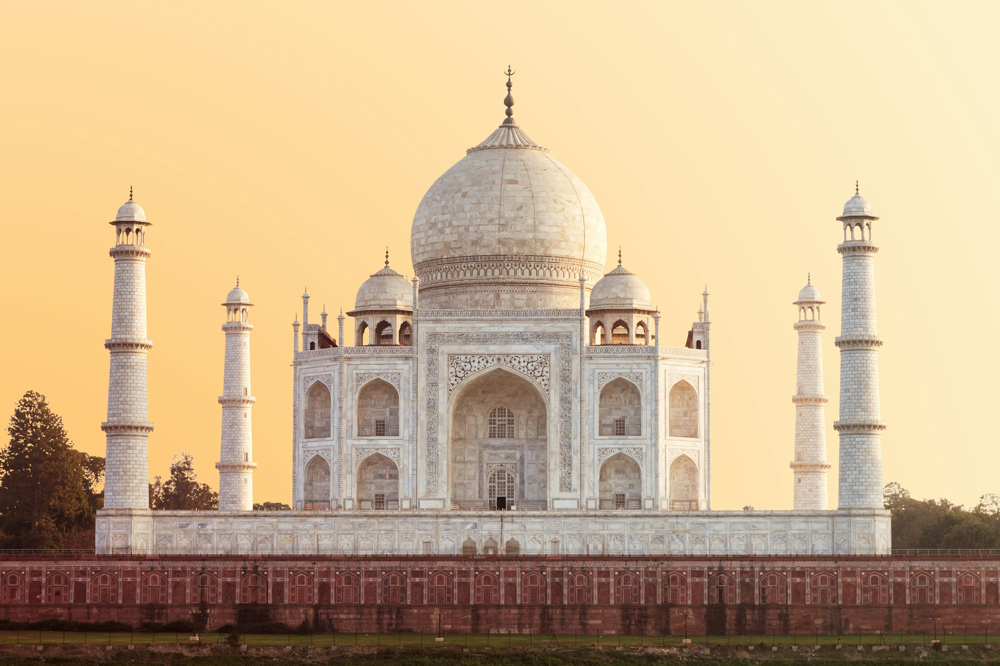
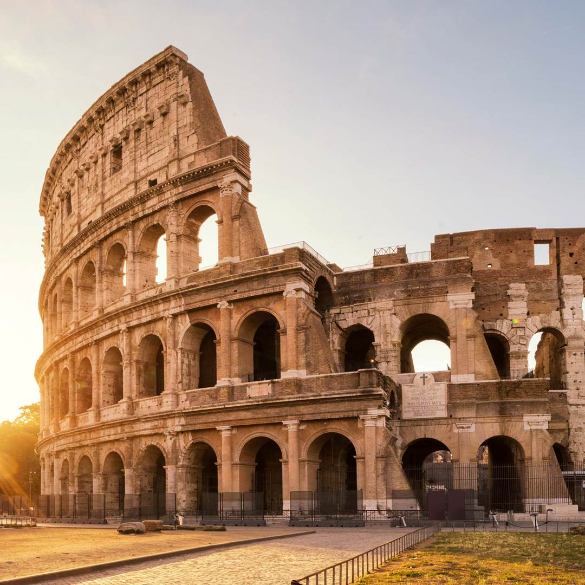
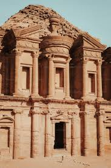
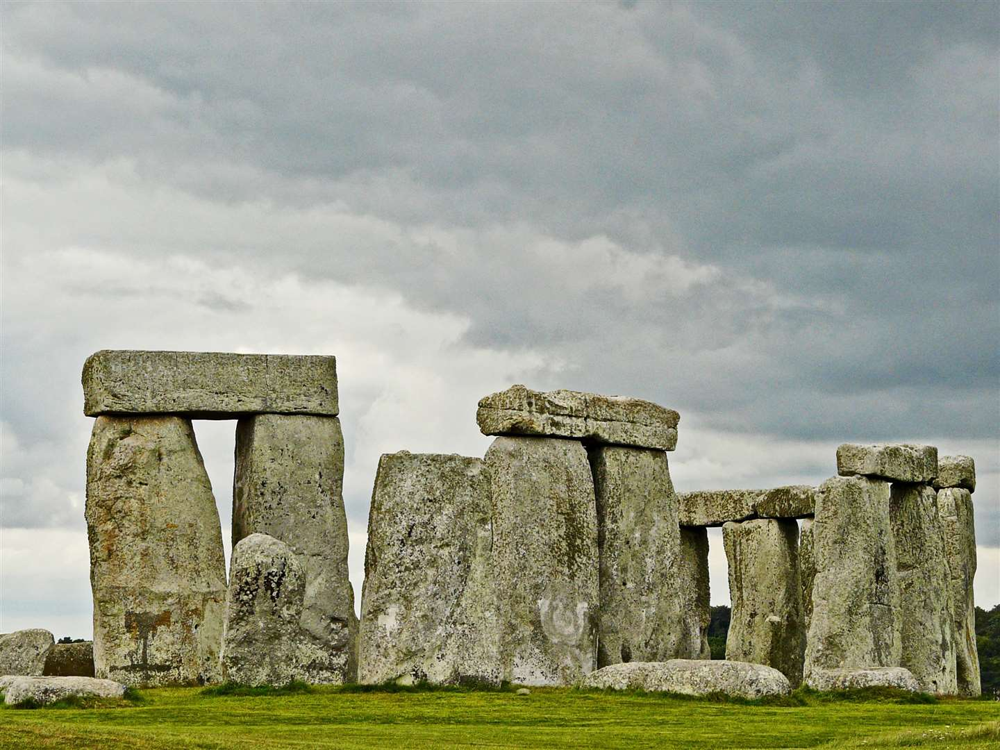
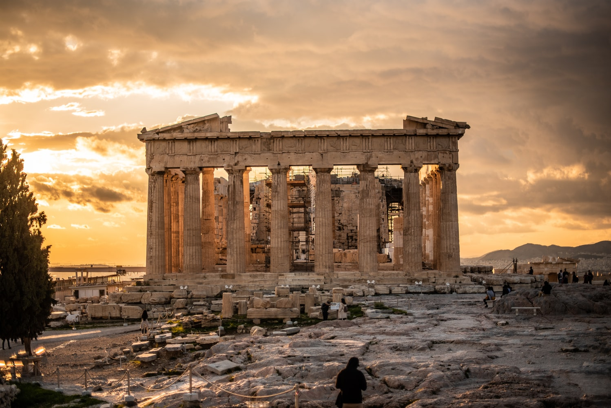
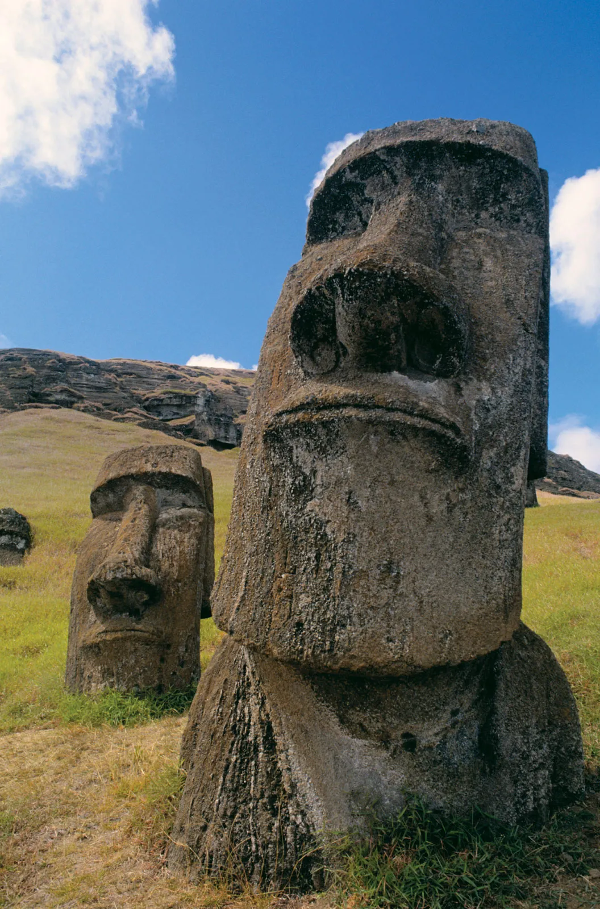
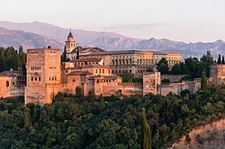
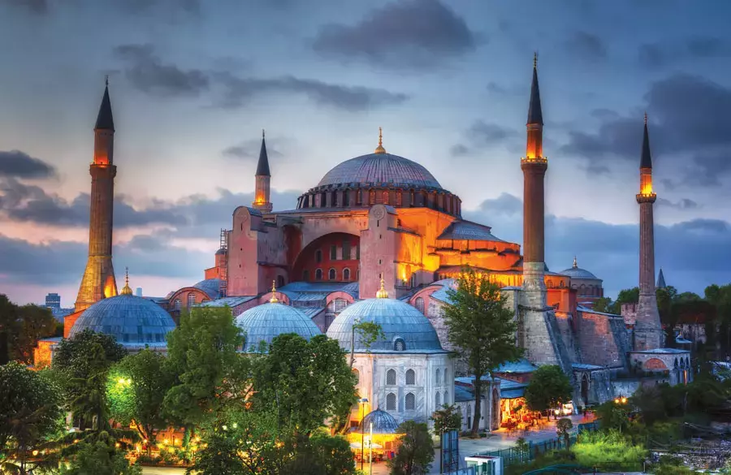

Great Wall of China
Fortification built across ancient Chinese states to protect from invasions.
Read More
Taj Mahal
Ivory-white marble mausoleum in Agra, India, built by Shah Jahan for his wife.
Read More
Colosseum
Ancient Roman gladiatorial arena, one of the greatest works of Roman architecture.
Read More

Petra
Archaeological site in Jordan famous for its rock-cut architecture and water conduit system.
Read MoreChrist the Redeemer
Iconic statue of Jesus Christ in Rio de Janeiro, Brazil, symbol of Christianity.
Read More

Stonehenge
Prehistoric monument in England, consisting of a ring of standing stones.
Read More

Acropolis of Athens
Ancient citadel located on a rocky outcrop above the city of Athens, Greece.
Read More
Easter Island
Remote volcanic island famous for nearly 900 monumental statues called Moai.
Read More
Alhambra
Palace and fortress complex located in Granada, Spain, known for Islamic architecture.
Read More
Hagia Sophia
Historic building in Istanbul that served as a church, mosque, and now a museum.
Read More
Neuschwanstein Castle
19th-century Romanesque Revival palace on a rugged hill in Bavaria, Germany.
Read More